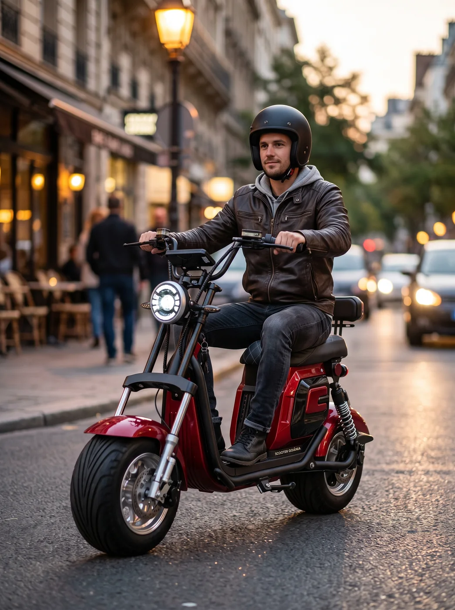

Avaliação e revisão
Avaliação do veículo quando algo não estiver funcionando como deveria e manutenção para acompanhar o uso.
Scooter Goiânia
Modelos para diferentes rotinas, com garantia, oficina especializada e suporte da Scooter Goiânia também depois da compra.
Scooters elétricas
Compare opções para trajetos mais curtos ou para quem precisa rodar mais entre uma recarga e outra.
Preços e disponibilidade conforme o catálogo vigente. Consulte a equipe antes de fechar a compra.
Scooters com pedal
Modelos compactos com pedal, banco e configurações variadas de bateria e autonomia.
* No modelo Ibiza, o prazo varia por componente: motor (1 ano), módulo e bateria (6 meses) e peças mecânicas (3 meses).
Bikes elétricas
Modelos com diferentes níveis de potência e autonomia para quem quer usar a bike em deslocamentos, passeios ou na rotina diária.
Características informadas no catálogo da Scooter Goiânia. Imagens ilustrativas do próprio catálogo.
Encontre o modelo para o seu uso
A Scooter Goiânia trabalha com scooters e bikes elétricas em diferentes configurações, tamanhos e faixas de preço. Se você ainda não sabe qual escolher, a equipe pode ajudar a comparar os modelos de acordo com a sua rotina.

Garantia, oficina e manutenção
Na Scooter Goiânia, o atendimento não termina quando o produto sai da loja. Antes da compra, a equipe orienta sobre as condições de garantia do modelo escolhido. Depois, se a scooter ou bike precisar de revisão, manutenção ou apresentar algum problema, o cliente conta com a oficina exclusiva e especializada da Scooter Goiânia.
Avaliação do veículo quando algo não estiver funcionando como deveria e manutenção para acompanhar o uso.
Suporte em casos de falha, perda de desempenho ou alteração no funcionamento e na autonomia.
Ajustes, manutenção e orientação sobre garantia quando houver dúvida sobre cobertura ou atendimento.
Dúvidas comuns
Entre os modelos enviados, a GT-2000 informa até 60 km.
Sim. O catálogo possui modelos com bateria de lítio e outros com bateria de chumbo.
Sim. Informe como pretende usar o produto e a equipe pode ajudar na comparação.
Sim. A cobertura varia conforme o produto.
Sim. A Scooter Goiânia possui oficina especializada e suporte pós-venda.
Ainda ficou com dúvida?
Conte como pretende usar sua scooter ou bike elétrica e compare as opções disponíveis. Tire dúvidas sobre modelos, disponibilidade, garantia ou assistência.